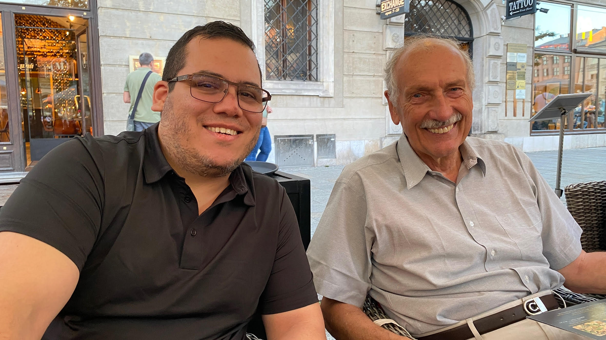
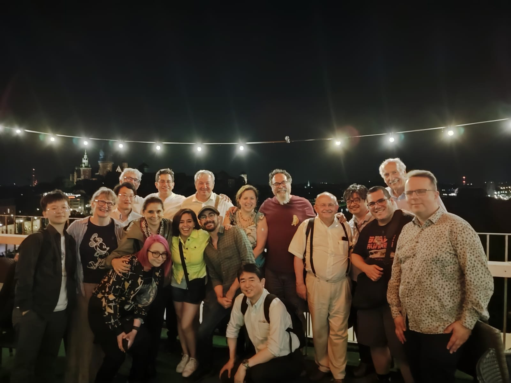
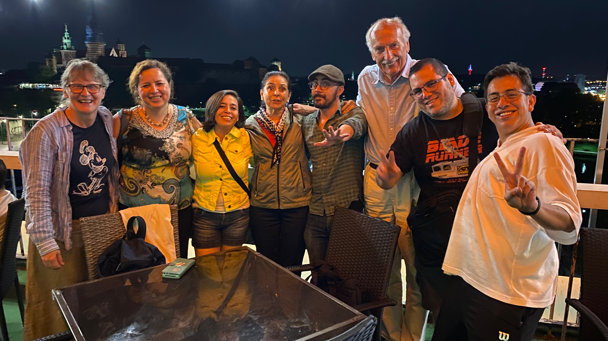
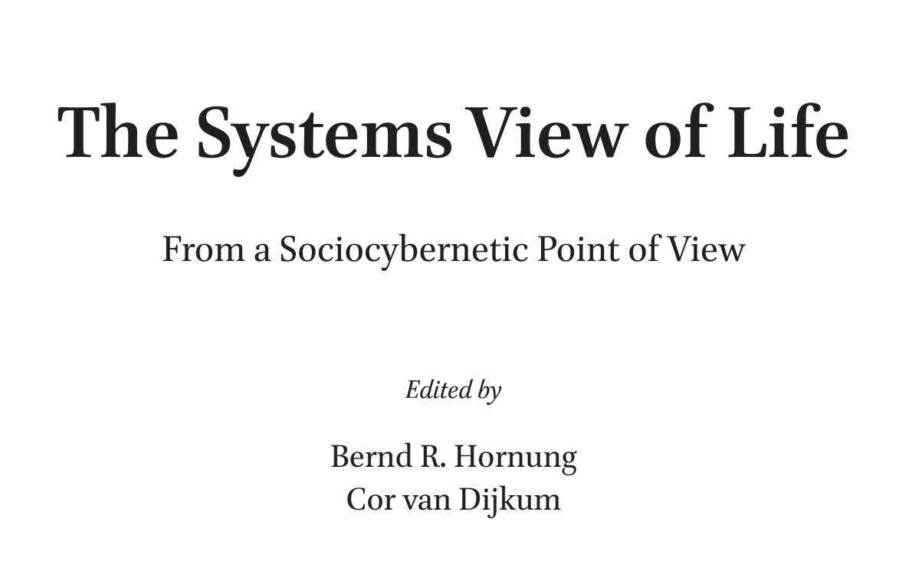
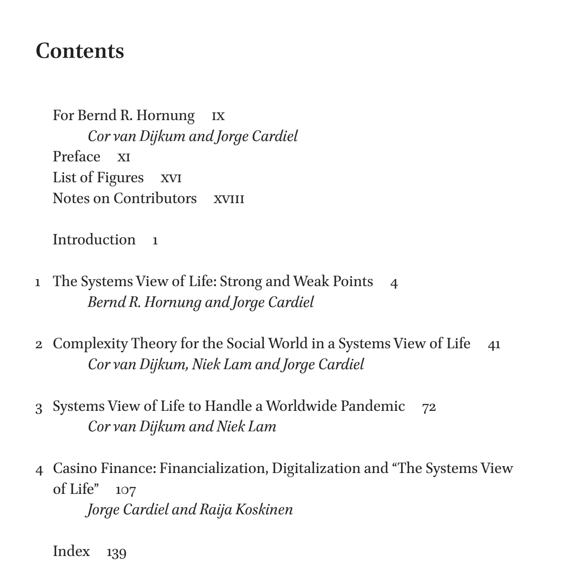
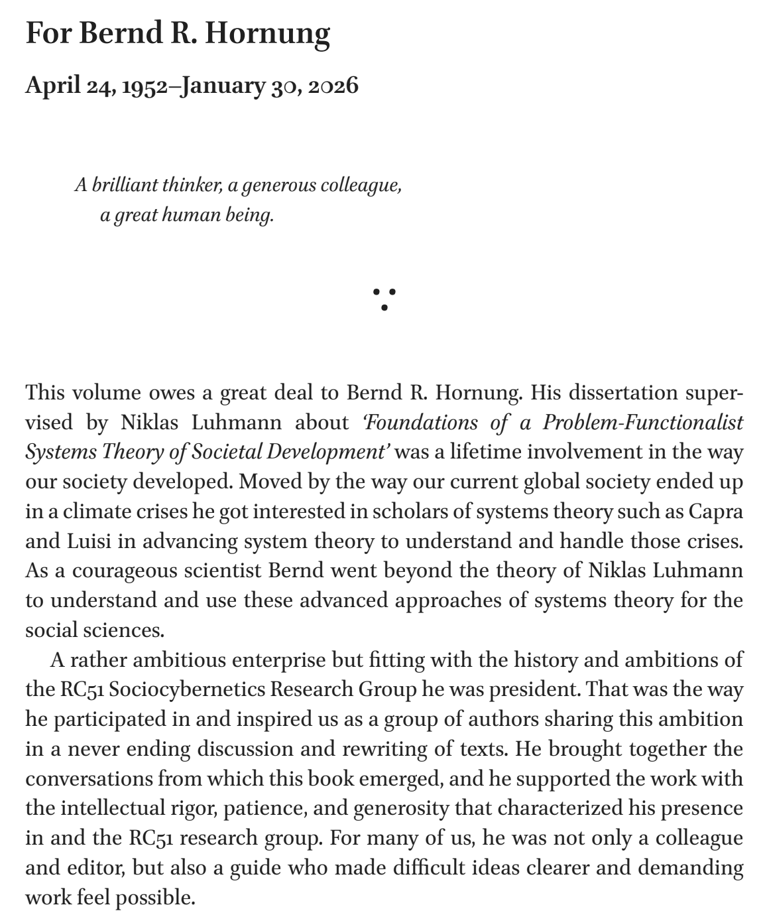
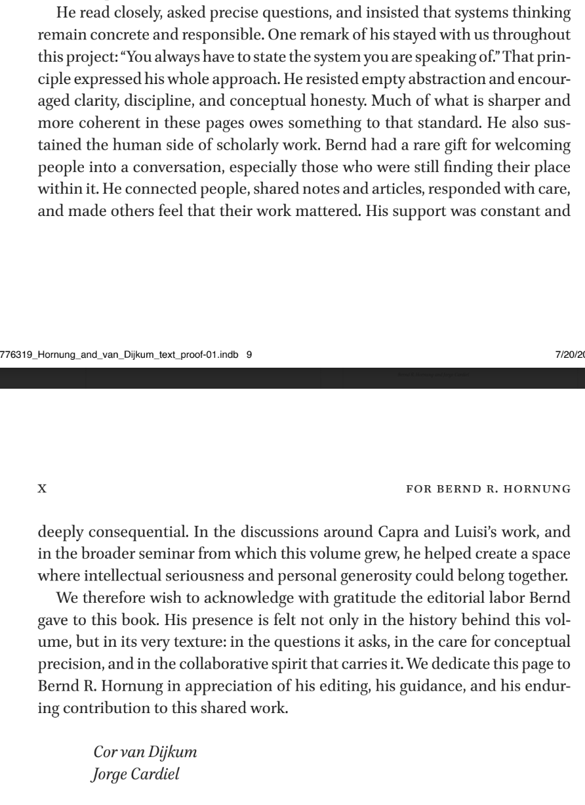

RC51 Sociocybernetics · Oaxaca 2026 · In Memoriam
April 24, 1952 – January 30, 2026
A brilliant thinker, a generous colleague,
a great human being.
These words will be spoken in Spanish —
scan to follow along in English.



You always have to state the system you are speaking of.
— Bernd, as we always heard him




Ein sich rollendes Rad
A wheel rolling onward —
self-propelled, steady, full of motion.
Every time one of us states the system we are speaking of,
Bernd is in the room.
Danke für alles. The wheel keeps rolling.
The full text of these words · English & Español